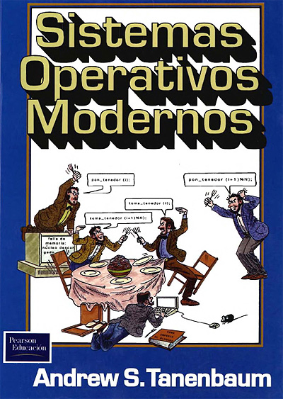

Sistemas Operativos
F.R.C.U. - U.T.N.
Ciclo Lectivo 2017
Datos de la cátedra
- Nombre: Sistemas Operativos.
- Código: K952A
- Área: Computación.
- Régimen de Dictado: Cuatrimestral.
- Carga Horaria Semanal: 8 horas (cátedra).
- Carga Horaria Total: 128 horas (cátedra).
Mecanismos de Contacto
- Página Facebook: http://www.facebook.com/sofrcu/
- Grupo Facebook: http://www.facebook.com/groups/sofrcu/
- Twitter: @sofrcu
Docentes
Ing. Gabriel Arellano
Profesor Adjunto Ordinario
@AreTchE // gabrielarellano[arroba]gmail.com
Ing. Osvaldo Aguiar
Jefe de TP Ordinario
@elTotoaguiar // aguiaro[arroba]frcu.utn.edu.ar
Horarios de Cursada
Lunes de 22:30 a 23:55 (Aula)
Jueves de 19:00 a 19:45 (Aula)
Jueves de 19:45 a 21:30 (LISI)
Jueves de 21:30 a 23:55 (Aula)
Horarios de Consulta
Jueves de 17:00 a 19:00 (Oficina 35)
Objetivos
Preparar al alumno para diseñar sistemas de información teniendo en cuenta los servicios que brindan los sistemas operativos de propósito general.
Programa Sintético
Generalidades de Sistemas Operativos: Objetivos, Principios de Diseño, Componentes y Arquitectura. Servicios prestados por los Sistemas Operativos. Sistemas Operativos de Propósito Específico. Estudio Comparativo de Sistemas Operativos.
Programa Analítico
- Introducción a los Sistemas Operativos
- Sistemas Operativos Monoproceso
- Sistemas Operativos Multitarea de Usuario Único
- Sistemas Operativos Multitarea y Multiusuario
- Sistemas Operativos de Propósito Específico
Evaluación
Conceptual y Objetiva
Teoría, Práctica y Actividades aúlicas
Parciales, Recuperatorios, Trabajos Prácticos
Recursos didácticos
- Lista de lecturas.
- Presentaciones.
- Guías de Laboratorio.
- Máquinas Virtuales y Emuladores.
- Animaciones y Simuladores.
- Películas y Documentales.
Libros de Cabecera

Sistemas Operativos: Un enfoque en espiral
- Autor: Rames Elmasri y otros.
- Editorial: McGraw-Hill.
- Edición: 1era. Edición (2010).
- ISBN: 978-607-15-0309-1.
- Ejemplares: 2.
Libros de Cabecera

Sistemas Operativos: Una visión Aplicada
- Autor: Jesús Carretero y otros.
- Editorial: McGraw-Hill.
- Edición: 1era. Edición (2001).
- ISBN: 84-481-3001-4.
- Ejemplares: 10.
Otros Libros

Sistemas Operativos
- Autor: McIver McHoes, Flynn.
- Editorial: Cengage Learning.
- Edición: 6ta. Edición (2011).
- ISBN: 978-1-4390-7920-1.
- Ejemplares: 1.
Otros Libros

Fundamentos de Sistemas Operativos
- Autor: Silberschatz, Galvin, Gagne.
- Editorial: McGraw-Hill.
- Edición: 7ma. Edición (2005).
- ISBN: 84-481-4641-7.
- Ejemplares: 4.
Otros Libros
Sistemas Operativos Modernos
- Autor: A. S. Tanenbaum.
- Editorial: Prentice-Hall Hispanoam.
- Edición: 1ra. Edición (1992).
- ISBN: 968-880-323-5.
- Ejemplares: 6.
Otros Libros

Sistemas Operativos Modernos
- Autor: A. S. Tanenbaum.
- Editorial: Prentice-Hall.
- Edición: 2da. Edición (2003).
- ISBN: 970-26-0315-3.
- Ejemplares: 3.
Otros Libros

Sistemas Operativos Modernos
- Autor: A. S. Tanenbaum.
- Editorial: Pearson Educación.
- Edición: 3ra. Edición (2009).
- ISBN: 978-607-442-046.
- Ejemplares: 3.
Otros Libros
Sistemas Operativos
- Autor: Gary Nutt.
- Editorial: Pearson - Addison Wesley.
- Edición: 3ra. Edición (2004).
- ISBN: 84-7829-067-2.
- Ejemplares: 10.
Gracias!
https://aretche.github.io/sofcu/slides/2017/00-presentacion/
Esta obra de Gabriel Arellano está bajo una licencia Creative Commons Atribución-CompartirIgual 4.0 Internacional.